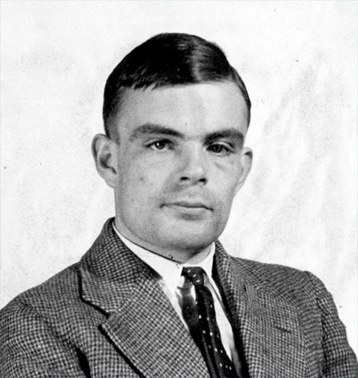
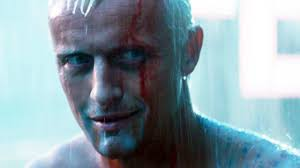
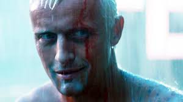

Cracking Codes and Killing Nazis, Government Code and Cypher School WWII
As one of the UK's leading crypotgraphers, I devised a number of techniques for speeding the breaking of German ciphers, including improvements to the pre-war Polish bombe method, an electromechanical machine that could find settings for the Enigma machine. I played a pivotal role in cracking intercepted coded messages that enabled the Allies to defeat the Nazis in many crucial engagements, including the Battle of the Atlantic; it has been estimated that my work shortened the war in Europe by more than two years and saved over fourteen million lives.
Developer of the Turing Test, Victoria University Mathematics Department 1948-50
In "Computing Machinery and Intelligence", I addressed the problem of artificial intelligence, and proposed an experiment that became known as the Turing test, an attempt to define a standard for a machine to be called "intelligent". My idea was that a computer could be said to "think" if a human interrogator could not tell it apart, through conversation, from a human being.
 
